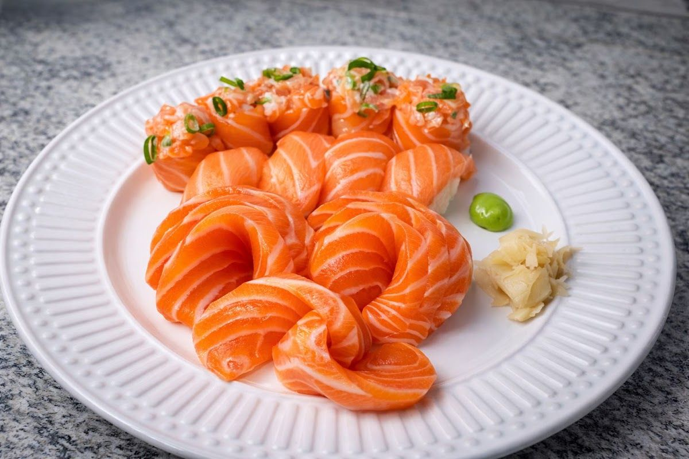
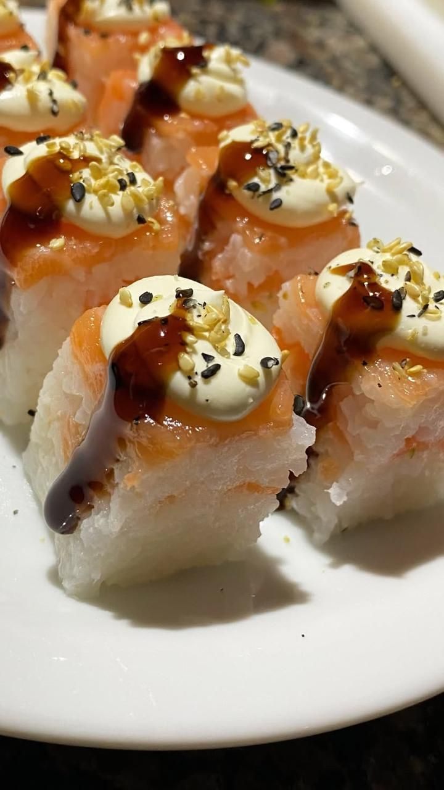
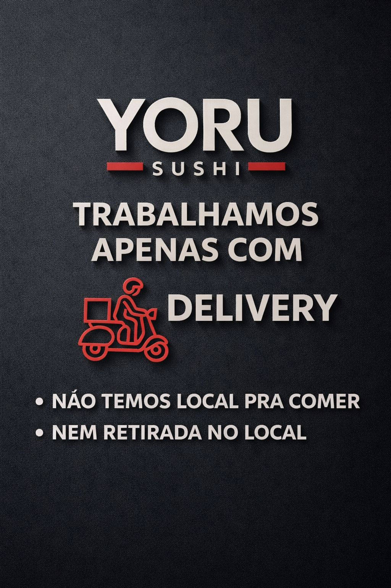

Sushi delivery · Cidade Ocian · Praia Grande
Sushi delivery em Praia Grande, do pedido à sua casa
O Yoru Sushi prepara comida japonesa para você receber em casa: combinados, temakis, hot rolls e outras opções da casa. Faça seu pedido pelo WhatsApp e aproveite a noite sem sair de casa. Atendimento das 18h às 23h30.
- Somente delivery
- 18:00–23:30
- Cidade Ocian · Praia Grande
Sobre
Sobre o Yoru Sushi
O Yoru Sushi é um delivery de comida japonesa em Praia Grande. *Yoru* significa "noite" em japonês — e é à noite que a casa atende, das 18h às 23h30. O trabalho é todo pensado para a entrega: cada pedido é preparado e embalado para chegar até você bem montado e pronto para servir. Para um jantar a dois, para reunir a família ou para receber os amigos, é só pedir pelo WhatsApp ou pelo iFood.
Comida japonesa feita para chegar até você.


Destaques
Por que pedir no Yoru
Pensado para o delivery
Um cardápio japonês preparado e embalado para ser aproveitado em casa.
Do clássico ao quente
Combinados, temakis, hot rolls e outras opções — veja o cardápio atual no WhatsApp.
Peça do seu jeito
Pelo WhatsApp ou pelo iFood, em poucos passos.
Atendimento à noite
Das 18h às 23h30, para o seu jantar.
CARDÁPIO SIMULADO — itens e preços ilustrativos. Este cardápio foi criado apenas para a prévia do site. Itens, quantidades e valores serão confirmados com o Yoru Sushi antes da publicação. Para pedir, consulte o cardápio atual pelo WhatsApp.
Entrega
Entrega
O Yoru Sushi trabalha somente com delivery: todos os pedidos são entregues no endereço que você informar. Ao pedir pelo WhatsApp, informe seu endereço para confirmar a disponibilidade e o prazo de entrega.
- Somente delivery
- sem retirada no balcão.
- Área de entrega e taxa
- A confirmar
- Formas de pagamento
- A confirmar
Como pedir
- Chame no WhatsApp (13) 99753-1891.
- Escolha os itens no cardápio atual.
- Informe o endereço de entrega e a forma de pagamento.
4,9 no Google · 108 avaliações
Sua opinião faz diferença
Já pediu no Yoru Sushi? Conte como foi no Google. Sua avaliação ajuda outros moradores de Praia Grande a nos conhecer e nos ajuda a melhorar a cada pedido.
Avaliar no GoogleContato
Fale com a gente
Atendimento
Somente delivery
Cidade Ocian, Praia Grande - SP
Horário
Fale com a gente
- Atendimento:
- WhatsApp / telefone: (13) 99753-1891 · Ligar
- Instagram: @yorusushi_
- Pedidos on-line: iFood
Bateu a vontade de comida japonesa?
Combinados, temakis e hot rolls entregues em Praia Grande, das 18h às 23h30. Fale com o Yoru Sushi pelo WhatsApp.